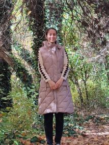

Hozir yana bir yili tugatib yangisini boshladik,yana baxtli bir yilimiz otdi, keyingi yangi yilgacha sog-salomat hammamiz yetish nasib qilsin.Bu yil mana instituta kirdik yana bazi yutuqlara erishdik. bu yiliyam yaxshi yilardan biri desak boladi.Albatta doim oldimiza maqsad qoyib yashimiz, manimcha sani oldindan qoygan eng katta maqsading arab tilini organib qoriya bolish bolsa kerak, Ilohim shundiy yaxshi niyating yetish.Kecha aytgantik yangi yilni uncha qiziqi qolmiyopti, aslida shundiy bolishiyam kerak chunki yangi islomda qoralangan, lekin agar birga bolsak aniq u ham qiziq boliyti,chunki nima qilsagam birga qilsak baribir boshqacha boladi.Shunchaki yangi yil bir bayram qilish uchun bahona, hozirki man sanga aytadigan bir sovgaga oxshab sovgani nimaligini keyinroq aytaman.Shu bilan bu yilimizi urushib yarashib otkazganimizdan xursandman, sog-salomat tugagani bilan ikkalamiziyam tabrikliyman, keyingi yilda ham hamma erishmoqchi orzularimiza yetishaylik nasib bolsa.Oldin telegegramda yozib qoyib keyin tashliytim, hozi sayt yasashdan boshqa iloj qolmadi.
Asosiy qismga ham yetib keldik.Judayam omadli odam ekaning birinchidan mani sevgilim bolganing uchun(hazil) keyin 2006-yil boshlanishi bilan tugilibsan.Malikam, asalim, jonim tugilgan kuning bilan tabrikliyman man bilan qosha qarish nasib qilsin,xudo bergan umri yana man bilan baxtli saodatli yashash ham nasib qilsin.Har yili kamayib boropti qaysidir yangi yildan xudo xoxlasa bu ikki bayrami birga nishonlimiz san qigan shirin taomla bilan.Indi bitta sir yoki yolgon desayam boladi shoni aytaman(doimkidiy yomon manodayamas yaxshilik uchun yolgon), man ozi shundoqam namozam oqiyotgantim, juma namozigayam borotgantim faqat tugilgan kuninga sovga qilib aytmoqchitim mana xudoga shukur osha kun ham keldi indi yolgon gapirmasamam boladi. Soliha ayol dini yarmi deyilgan,san man uchun eng yaxshisisan nasib bolsa dinimi yarmi sansan. Sani shunchaki sevmadim narigi dunyoda albatta xudo xoxlasa jannatda ham birga bolish uchun. sevdim.Sandiy yaxshi qizi xudo manga uchratgani va bir birimiza nisbatan sevgi ato etgani uchun man judayam xursandman.Nasib bolsa holi kop namozlari birga oqiymiz,allohni huzuridayam birga turamiz.Yana bir bor tugilgan kuning bilan tabrikliman gozalim.